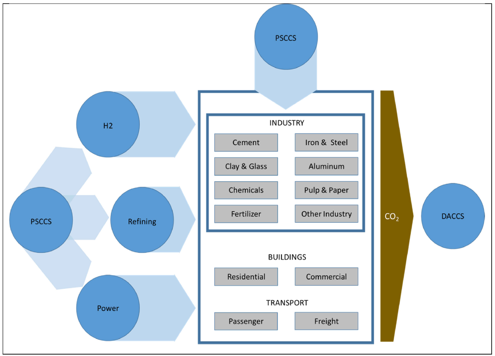

A new study published in the journal Energy and Climate Change by the Energy Modeling Forum Carbon Management Study Group (EMF-CMSG) offers valuable insights for the United States to achieve its economy-wide net-zero emissions goal.
The study examined various scenarios and found that achieving net-zero U.S. CO2 emissions without point source carbon dioxide capture and storage (PSCCS) or direct air capture of carbon dioxide (DACCS) was often computationally infeasible or prohibitively expensive.

The analysis of hydrogen (H2) technologies showed mixed results; some models lacked comprehensive options, while others suggested that hydrogen could be vital for reducing emissions in hard-to-decarbonize sectors like industry and transportation. This highlights the need for better modeling of hydrogen production and use.
Furthermore, the models used coarse geographic resolutions, possibly overlooking important factors influencing CO2 transportation costs and methods, such as pipeline, rail, or ship. Future research utilizing more detailed, spatially resolved analyses could improve understanding of the associated challenges and costs of CO2 transport and storage, informing effective climate strategies. The study revealed that carbon prices were highly sensitive to the availability of these technologies, potentially soaring to thousands of dollars per ton of CO2 when they were not available, while advanced versions could significantly lower these costs.
“Reducing the last 10% of emissions isn’t going to be cheap,” said Prof. Haewon McJeon of KAIST Graduate School of Green Growth & Sustainability, who coauthored the study. “Breakthroughs in carbon capture and storage technologies can help reduce the high cost of achieving net-zero emissions goal.”
Read the full paper here: https://doi.org/10.1016/j.egycc.2024.100154
한국어 요약
미국의 경제 전반에서의 탄소중립 달성을 위한 탄소관리 기술의 역할
국제 학술지 Energy and Climate Change에 발표된 본 연구는 미국이 경제 전반에 걸쳐 탄소중립 목표를 달성하는데 있어 유용한 통찰을 제공한다. 이 연구는 탄소중립을 위한 세 가지 핵심 기술인PSCCS(Point Source Carbon Capture and Storage, 배출원에서의 탄소 포집 및 저장), DACCS(Direct Air Carbon Capture and Storage, 대기중 탄소 직접 포집) , 수소(H2)의 역할을 여러 시나리오와 다양한 모델을 통해 비교 분석하였다. 주요 결과로는PSCCS(점원 탄소 포집 및 저장)와 DACCS(직접 공기 포집) 없이 순배출 제로를 달성하는 것이 불가능하거나 매우 비용이 많이 발생한다는 것이다.
연구에서는 수소 기술의 분석 결과도 제시하는데,수소가 산업 및 교통 부문의 배출 감소에 중요한 역할을 할 수 있다는 점도 시사했다. 이는 향후 연구에서 수소 생산 및 사용에 대한 보다 고도화된 모델링의 필요성을 강조한다.
또한,지역 해상도가 낮은 모델들은 이산화탄소 운송 비용 및 방법에 영향을 미치는 중요한 요소들을 놓칠 수 있으며, 향후 연구는 더 세부적인 분석을 통해 이산화탄소 운송과 저장에 대한 이해를 높이고 효과적인 기후 전략을 수립이 필요하다.
KAIST녹색성장지속가능대학원의 전해원 교수는 “탄소 포집 기술없이 탄소중립을 달성하는 것은 매우 비용이 많이 들어가는 문제가 있다”고 강조하였으며, “탄소관리 분야의 혁신적 기술 개발과 상용화 촉진을 통한 비용절감이 필요하다”고 밝혔다.